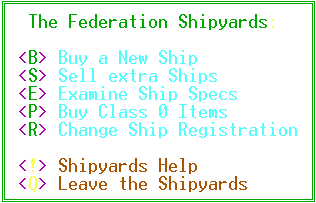

|
Shipyard
Command Menu |
|

 Hardware
Command Menu
Hardware
Command Menu
|
 Navigation
Console
Navigation
Console
|
 Tavern
Command Menu
Tavern
Command Menu
|


 Shipyard
Commands
Shipyard
Commands
<B>
Buy a New Ship
When you are ready
to upgrade, or if you need a specialized ship, come to the Shipyards and
talk to Cal Worthington XXI about a trade-in. You will be offered
a fair price for your current ship. They will take anything in your
trade such as fighters, accessories, mines, etc. so if you're trying to
get a lot on your trade-in, load your ship up before you talk to them.
If you don't want to use all your extras in the trade, you might want to
leave as much as you can in a secure place and pick it up after you purchase
your new ship. New ships are very basic models. The extras
are available at the Hardware Emporium and the Class 0 ports.
<S>
Sell Extra Ships
A display with all
your ships in orbit will appear. Choose which ones to sell off.
You will be able to see the ship number, name, type, location and how many
fighters and shields are on each ship.
<E>
Examine Ship Specs
This is the same information
available to you from your ship's on-board computer, but in includes (for
ANSI users only) a picture of each ship, both top and front view.
You may want to review the ship specifications one last time before you
make your purchase.
<P>
Buy Class 0 Items
After you purchase
your ship, you may need to equip it with a few of the items normally purchased
at the Class 0 ports. You wouldn't want to take that brand new beauty
out unprotected, would you? The merchants in the shipyards have obtained
fighters, shields and holds from "trade-ins" so they are offering them
right here where you buy your ship as a convenience to you. Be forewarned
that you will be paying a premium price for this convenience.
<R>
Change Ship Registration
It's not paranoia
when they're really out to get you. If your foes are tracking you
down by reading the logs at the StarPorts or they've received information
on your ship from a loose-tongued fool at the tavern, go to this back room
in the offices of the Shipyards. For a hefty fee, you can get revised
registration papers on your ship and christen it with a new, untraceable
name.
<!>
Shipyards Help
Display the portion
of the documentation describing the Shipyards functions.
<Q>
Leave the Shipyards
Return to the main
area of the StarDock.
|
Hardware
Command Menu
|
 Exit
Help
Exit
Help
|
Tavern
Command Menu
|